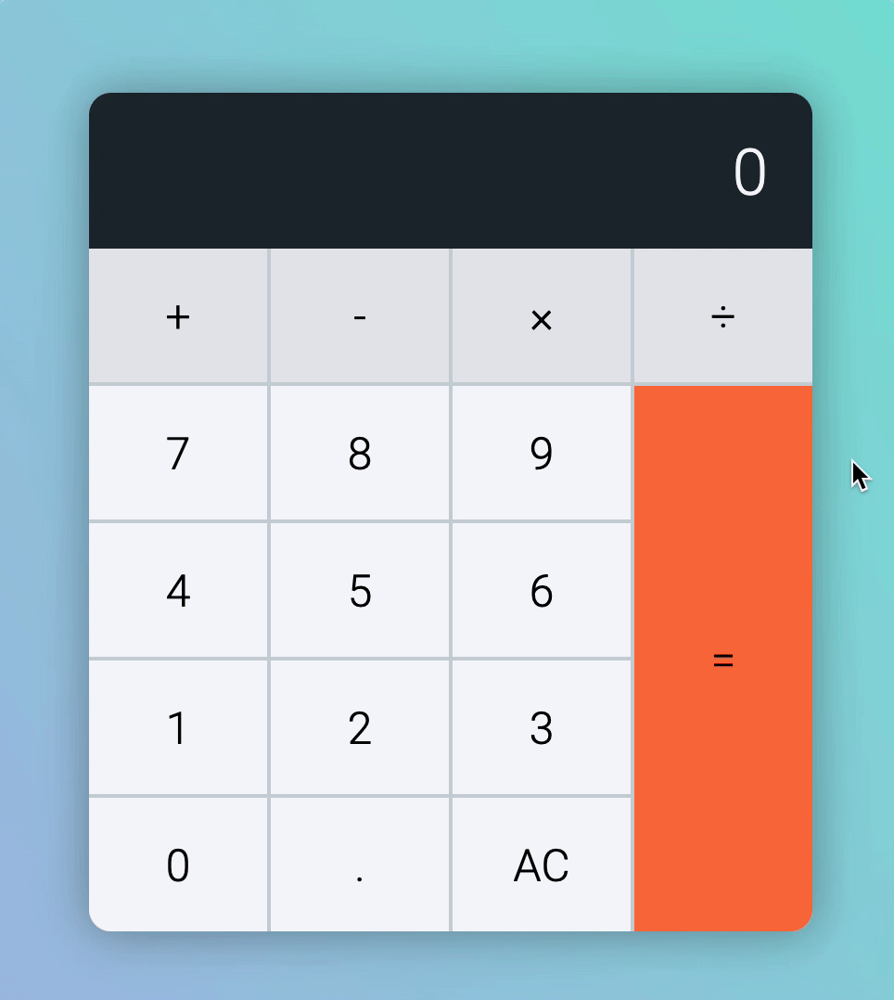

When a user picks up the calculator, they can click any of these five types of keys:
A number key
An operator key
The decimal key
The equal key
The clear key
It can be overwhelming to consider five types of keys at once. Let’s take it step by step and consider what a normal person would do when they pick up a calculator. This “what a normal person would do” is called the happy path.
Let’s call our normal person Mary.
When Mary picks up a calculator, she’s likely to click a number key.
If Mary clicks a number key
If the calculator shows 0, we should replace it with the number that was clicked.
To do this, we need to find the value of the number that was clicked. This value can be found in the key attribute.
There’s only one decimal key, and there are four operator keys. We will first consider what happens when Mary clicks the decimal key (because it’s less overwhelming).
If Mary clicks the decimal key
A decimal should appear on the display if Mary clicks the decimal key.
If result is 0, we show 0.
If result is 9, we show 9.
Creating this is simple, we will add . to the result.
calculatorButtonsDiv.addEventListener('click', event => {
// ...
if (buttonType === 'decimal') {
display.textContent = result + '.'
}
// ...
})

At this point, Mary can click either of these keys:
A number key
An operator key
We can work on the number key since we’ve already started work on it.
If Mary clicks another number after the decimal key
If there’s a decimal in the results, we always append a number to the results. Let’s say Mary clicks 7 this time.
If result is 98., we show 98.7
If result is 0., we show 0.7
We don’t have to write any code for this to happen.
If Mary clicks an operator key
Operator keys are plus, minus, times, and divide keys.
When they’re clicked, we want to highlight the operator key so Mary knows the operator is active. We can do this by adding an is-pressed class to the operator key.
Regardless of what the displayed number is, we need to reset the display to the new number. At the same time, we want to release the operator key from its pressed state.
To release the pressed state, we remove is-pressed from each operator key.
calculatorButtonsDiv.addEventListener('click', event => {
// ...
// Release operator pressed state
const operatorKeys = [...calculatorButtonsDiv.children]
.filter(button => button.dataset.buttonType === 'operator')
operatorKeys.forEach(button => button.classList.remove('is-pressed'))
// All the if statements...
})
To reset the number back to zero, we need to know the previous button was an operator. One way to do this is through a custom attribute.
Let’s call this custom attribute data-previous-action.
Let’s say Mary is satisfied with her numbers and operators. She wants to calculate what she has clicked. This time, she clicks the equal key.
When Mary clicks the equal key
The calculator should calculate a result that depends on three values:
The first value (before we clicked the operator)
The operator
The second value (the one that’s currently displayed)
To get the first value, we need to save results before we replace it with the second number. We can do this with a custom attribute called data-first-value.
calculatorButtonsDiv.addEventListener('click', event => {
// ...
if (buttonType === 'operator') {
button.classList.add('is-pressed')
calculator.dataset.firstValue = result
}
// ...
})
We also need to save the operator key at the same time.
Now, we can perform a calculation. After calculating, we will show the new result on the display.
calculatorButtonsDiv.addEventListener('click', event => {
// ...
if (buttonType === 'equal') {
const firstValue = calculator.dataset.firstValue
const operator = calculator.dataset.operator
const secondValue = result
let newResult
if (operator === 'plus') newResult = firstValue + secondValue
if (operator === 'minus') newResult = firstValue - secondValue
if (operator === 'times') newResult = firstValue * secondValue
if (operator === 'divide') newResult = firstValue / secondValue
display.textContent = newResult
}
// ...
})
But we have a problem. 98.7 + 6 should not be equal to 98.76. It should be 104.7.
This happened because values stored in custom attributes are stings. The value from .calculator__display's textContent is also a string. When you add two strings together, you concatenate the strings. Which is why you get 98.76.
To fix this, we need to change firstValue and secondValue to numbers. We can do this with parseInt or parseFloat.
parseInt changes a string into an integer. parseFloat changes a string into a number with decimals. We need parseFloat in this case.